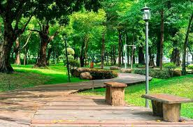
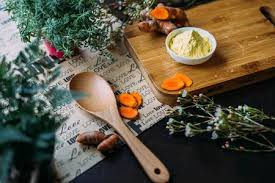

Mi nombre es Rodrigo Resendiz Noguez y para este primer proyecto realizare mi propia autobiografia en la cual compartire diversos aspectos de mi vida.
Nací en una mañana del 1 de junio del 2006 en la ciudad de Queretaro, Mexico. Actualmente tengo 17 años, y disfruto cada dia de mi vida. Actualmente, vivo con mis padre y mis dos hermanas, en una casa mediana, pero los sufientemente grande para poder jugar con mis dos mascotas un perrito blanco y un gato de color cafe.
Mis primeros estudios de educación primaria los realice en la escuela primaria "Miguel Hidalgo", la cual fue una pequeña escuela que se encontraba a unas pocas calles de mi casa, siguiendo con mi educacion realice mi etapa de la secundaria en la escuela "Felipe Carrilo Puerto" la escula no quedaba muy cerca pero agradable caminar de regreso a casa mirando el atardecer que habia al salir de clases. Mi gusto por las computadoras me llevó a estudiar especialidad de Programacion en el bachillerato "instituo Cambridge", y donde actualmente curso mi ultimo semestre. Despues de terminar esta etapa espero estudiar la carrera de derecho en la Universidad de la UAQ.
| Salir a Jugar | Leer | Cocinar |
|---|---|---|
| Cuando no estoy en semanas de examenes y proyectos, disfruto ir a jugar al parque con mi perro y la bicicleta. | Actualmente estoy tratando de leer para volverlo un pasatiempo en las tardes antes de ver la televison. | Tambien me gusta ayudar a preparar la comida y tratar de hacer postres para despues de la comida sin utilizar demasiada azucar pero conservando el buen sabor. |
|  |  |
A lo largo de mi corta vida, he tenido la suerte de viajar a muchos lugares fascinantes que se encuentran en Mexico. Desde algunas playas en el estado de Jalisco hasta pueblos magicos en el estado de Guanajuato y Puebla, cada viaje ha sido una aventura única llena de experiencias inolvidables al lado de mi familia
Mi primera meta es continuar haciendo ejercicio regularmente y seguir una dieta equilibrada. Ademas mi objetivo a largo plazo es completar una carrera de maratón, esto requerirá un entrenamiento constante y dedicación, pero en algun futuro conseguire lograrlo. Mi principal objetivo a corto plazo es ingresar a la facultad de derecho,para tener la oportunidad de estudiar leyes y profundizar en mi comprensión de los sistemas legales y los derechos humanos.